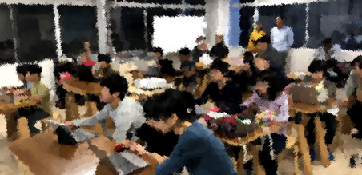

CoderDojo（コーダー道場）は、子どものためのプログラミング道場です。2011年にアイルランドから始まり、世界では110カ国・2,000以上の道場、日本では全国に215以上の道場があります。CoderDojo は全国各地で定期的に開催されており、延べ10,000人以上の子ども達が毎年楽しみながら様々な作品を創っています。
各 Dojo は、チャンピオンやメンターと呼ばれる協力者によって自主的に運営されています。プログラマーやデザイナーだけでなく、学生や教員、アーティストやフリーランス、起業家や投資家などの方々が分野横断的に協力しあって、それぞれの Dojo が継続的に運営されています。もちろん、参加者自身や参加者の親が運営に協力する事例も多いです。
CoderDojo に参加する子ども達を「ニンジャ」と呼び、サポートする人達を「メンター」と呼びます。
「ニンジャ」は、わからないことや知りたいことがあれば「メンター」に相談します。
必ずしも「メンター」が答えられるとは限りませんが、一緒に調べて試してみることで、お互いに知識習得ができます。
東京都青梅市周辺地域の皆様と一緒に学ぶプログラミングクラブです。何が出来るのか？
メンターとボランティアを募集しています。プログラム未経験でも可。詳しく